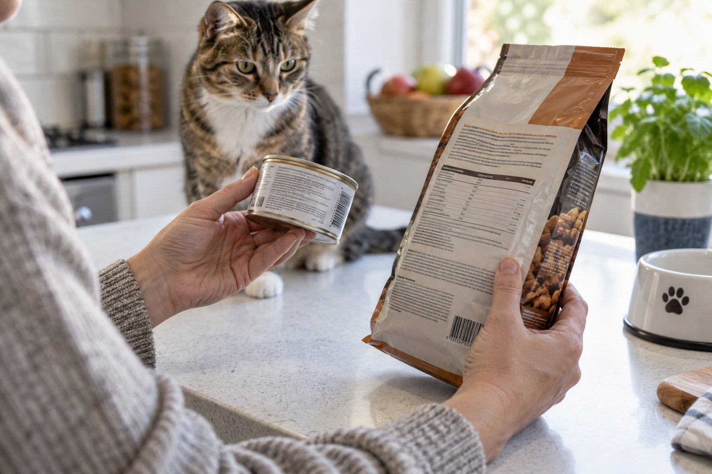

For a main diet, find a nutritional adequacy statement that says the food is complete and balanced for your pet’s species and life stage. Then check feeding guidance, calories, and the maker’s contact details.
The front of a pet food package is designed to catch your eye; the most useful nutrition information is usually on the back or side. A confident choice starts by asking whether the food is meant to be a complete diet for your dog or cat. Ingredient lists and words such as “premium” can be interesting, but they cannot answer that question alone.
Find the nutritional adequacy statement first
For a food that will provide most of a pet’s meals, look for a statement saying it is complete and balanced. In the United States, that statement may describe formulation to AAFCO nutrient profiles or feeding trials using AAFCO procedures. It should name the species and the life stage for which the food is intended. A puppy, kitten, adult, or pregnant animal may have different needs. A package marked for intermittent or supplemental feeding is not the same as a complete everyday diet unless your veterinarian has provided a specific plan.
Do not assume that a product sold in a familiar food aisle is suitable as a sole diet. Treats, toppers, and some specialty foods are intended for a different role. If the adequacy statement is difficult to find, photograph it or ask the manufacturer for clarification. For a pet with a medical condition, ask your veterinarian whether the label matches the animal’s treatment plan. A general label cannot account for an individual diagnosis.
Read the words carefully rather than treating a logo or attractive picture as proof. A label may use phrases such as “all life stages,” but that can still require consideration of your pet’s age and health. A veterinarian can help interpret whether a food fits a large-breed puppy, a senior animal, or a pet who needs a prescribed diet. Do not change a prescribed food because a retail package looks more natural or has a shorter ingredient list.
Label rules differ by country, so use the statement required where the product is sold and seek local veterinary advice when importing or buying across borders. The principle remains the same: establish what the food is intended to do before judging flavor, package size, or marketing language. Keep a photo of the full label when discussing a new food with your veterinary team.
Use feeding directions as a starting point
Feeding guides commonly give a range based on body weight, but they cannot know your pet’s activity, body condition, age, or every treat offered at home. Start with the manufacturer’s directions only if they suit your veterinarian’s advice, then measure what you actually serve. A scoop with no marked volume may vary from day to day. Weighing food on a kitchen scale can make portions easier to repeat, especially when several people feed the pet.
Look for calorie information and the unit used. Calories may be listed per cup, can, pouch, or kilogram. The number matters only if you compare like with like and know the portion served. A wet food and a dry food may look dramatically different by weight because water content differs. Do not compare their ingredient percentages or calorie density without considering that difference. If you mix foods, count both contributions and ask your veterinarian how to keep the total appropriate.
Imagine two dogs of the same weight. One walks several miles daily; the other is recovering from surgery. The same label range may not be right for both. Body condition and weight trend help show whether an initial amount works. Adjustments should be gradual and guided by a veterinary professional when health issues are involved. For cats, avoid abrupt large calorie cuts; a clinician should supervise weight loss.
Treats, chews, and table scraps add calories but often disappear from the written feeding plan. Record them for a week if your pet’s weight is changing. A small training treat repeated many times can become a substantial daily addition. Ask the household to use one shared measure rather than letting each person guess. The label gives a starting framework; your pet’s response and veterinary assessment tell you whether the plan needs revision.

Read ingredients without overinterpreting the order
Ingredients are usually listed by weight before processing under the rules that apply to the product, but that order does not by itself reveal the final nutrient quality or digestibility. A fresh ingredient can weigh more because it contains water. Different forms of a similar ingredient can appear separately. Avoid deciding that a food is automatically better because one familiar meat name appears first, or worse because an unfamiliar technical word appears later. Ask what the full diet provides and how it was evaluated.
The guaranteed analysis or comparable nutrient panel provides minimum or maximum values for some nutrients. These numbers can help compare products when the units and moisture levels are accounted for, but they do not tell the entire nutritional story. A veterinarian or veterinary nutrition professional can help with a medical diet or a sensitive pet. If the package lacks information you need, contact the maker rather than guessing from an online slogan.
Marketing terms can distract from fit. “Natural,” “holistic,” and “premium” may sound reassuring, yet they are not a substitute for nutritional adequacy, appropriate life stage, and the pet’s actual health. A bag can have appealing photographs and still be the wrong choice for a growing kitten or a dog with a prescribed condition. Conversely, an unglamorous package may contain a suitable complete diet. Look past the visual promise and compare the facts the label actually gives.
Food allergies and sensitivities are especially easy to oversimplify. Do not diagnose one by scanning an ingredient list and removing several foods at once. A veterinarian may recommend a controlled diet trial and help you interpret the result. If a product claims to avoid a particular ingredient, check the full label and ask the manufacturer about handling if strict avoidance is medically important. Label reading is one step, not an allergy test.
Label reading order
| Look for | Question it answers |
|---|---|
| Adequacy and life stage | Can this be the main diet for this pet? |
| Feeding guide and calories | How much is a reasonable starting portion? |
| Lot, date, and storage | How should this package be used and kept? |
Check practical details before buying
Look for the manufacturer or distributor’s contact route, lot number, best-by date, storage instructions, and any specific preparation guidance. Keep the lot information or take a photograph when opening a new package; it can help if there is a quality concern later. Inspect cans for damage and bags for torn seals. Follow storage directions after opening, including refrigeration where required. Food safety is part of nutrition even when the nutrient profile looks appropriate.
Consider package size in relation to how quickly your household uses the food. A very large bag may be cheaper per unit but spend too long open in a warm, humid place. Keep dry food in its original bag when possible, placed inside a clean container so the label and lot remain available. Close the bag securely and wash food bowls regularly. Use clean utensils to serve wet food and refrigerate leftovers according to the label.
If you buy online, check that the seller provides the same complete label and that the product arrives in sound condition. Beware of a listing that shows only the front image or makes claims without a nutritional statement. Confirm whether a recipe has changed; a familiar package design can conceal a new formulation. When in doubt, compare the current label with a photo of the previous one, particularly if your pet has a sensitive stomach or medical need.
Keep one change at a time where possible. If you switch food, treats, and supplements in the same week, it becomes difficult to tell what affected stool, appetite, or weight. Use a gradual transition plan unless your veterinarian has advised otherwise. Make a short note of the start date and the exact product. That small record can make a later conversation with the clinic much more useful.
Turn label information into a decision
Start with five questions: Is this for a dog or cat? Is it complete and balanced for this pet’s life stage? What amount is suggested and what calories does that amount provide? Are there storage or preparation instructions? Can the maker answer a question? If those answers are unclear, keep looking or ask for help. An attractive ingredient story should not outrank a missing adequacy statement.
For a healthy pet already thriving on a complete diet, there may be no need to change food because of a trend or an advertisement. Check body condition, stool, energy, and weight over time. A veterinarian can help if growth, age, disease, or appetite changes the decision. New foods should be introduced deliberately, not as a rapid response to every social-media claim.
Keep the label for the product you actually feed. If you decant the food, photograph the back panel and lot number. Share that information during a veterinary appointment, along with the actual daily amount and all treats. “Chicken kibble” is not enough detail for a useful nutrition history. A precise description lets the clinician evaluate the full diet and make a better recommendation.
The best label reading habit is repeatable rather than complicated. Find adequacy, life stage, feeding and calorie details, then practical safety information. Use those facts to ask informed questions about your pet. If a medical condition is involved, let the veterinary team translate the label into an individual plan. The package is a source of information, not a replacement for your pet’s response or professional care.
A useful comparison exercise is to put two packages side by side and read the same fields in the same order. First locate the adequacy statement, then life stage, calorie units, feeding directions, and manufacturer details. Only after that consider ingredients, flavor, texture, and cost. This order prevents a bright claim on one bag from being compared with a technical panel on another. If one product is a treat and the other a complete food, they are not alternatives for the same job.
Do not copy a food’s calorie figure into a feeding app without its unit. A value per kilogram is very different from a value per cup or can. Check whether the cup refers to a standard measuring cup and whether the food is packed or loose. Weigh a normal scoop once to see what your household actually serves. If a veterinarian gives a calorie target, show them the exact product and portion method so the plan can be translated into a usable bowl amount.
Labels can change over time. Re-read a new bag if packaging, kibble appearance, or your pet’s response differs. Keep both the old and new lot photos when reporting a concern. If the maker cannot answer a basic question about adequacy, calories, or storage, that uncertainty belongs in your decision. Choose information you can verify over a slogan you cannot test.
A label is also a way to avoid accidental species mix-ups. Dog and cat foods can look similar on a shelf, yet their nutritional requirements differ. Check the species statement every time a household has both animals, especially when packages share a design. Store foods separately and explain the distinction to anyone who feeds the pets. If a pet has been eating the wrong product regularly, ask a veterinarian how to correct the diet safely.
Continue exploring
For a broader routine, read Can Dogs Eat Bananas? What Pet Owners Should Know, Can Cats Eat Cooked Chicken?, and How to Switch Dog Food Gradually and Safely.
Frequently Asked Questions
Does the first ingredient tell me which food is best?
No. Ingredient order alone does not show overall nutrient adequacy or digestibility, and water content can affect weight before processing. Start with the nutritional adequacy statement and your pet’s needs.
Can a treat be my pet’s main food?
Most treats and toppers are not meant as a sole diet. Check whether the package says complete and balanced for the correct species and life stage; ask your veterinarian about exceptions.
Why do feeding amounts differ between brands?
Foods vary in calorie density and serving units. Compare calories for the actual portion and monitor body condition. Your veterinarian can tailor an amount for your pet.
Editorial references
These resources informed the general guidance in this article. They do not replace advice tailored to your pet.
This guide offers general information. Your pet’s age, health, and history may call for a different plan. For medical concerns, ask your veterinarian.